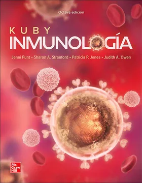
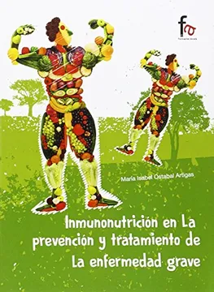
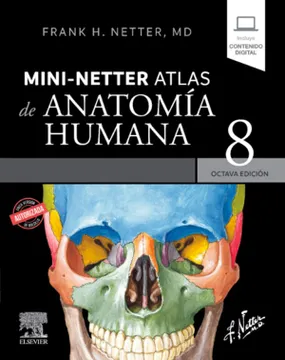
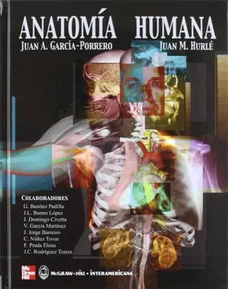
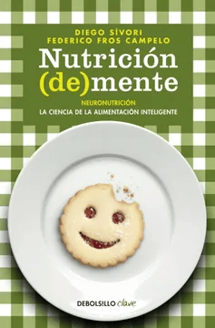
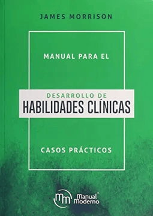
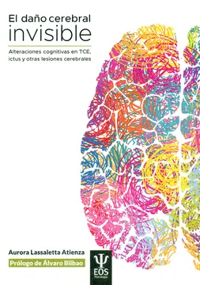
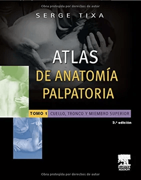

KUBY Inmunología Octava Edición
AUTOR: Jenni Punt y Judith A. Owen

Inmunonutrición en la Prevención de la Enfermedad Grave
AUTOR: María Isabel Artigas

MINI-NETER Atlas de Anatomía Humana
AUTOR: Frank H. Netter. MD

Anatomía Humana, Editorial Interamericana
AUTOR: Juan A. García Porrero

Hacia una Terapia Basada en Procesos
AUTOR: Dra. Olivia Gamarra

Neuronutrición la Ciencia de la Alimentación Inteligente
AUTOR: Diego Sivori Federico

Cómo el Exceso de Antibióticos Aviva las Plagas Modernas
AUTOR: Martin J. Blaser
Enfermedades que Cambiaron la Historia
AUTOR: Pedro Gargantilla

Desarrollo de Habilidades Clínicas
AUTOR: James Morrison

El Daño Cerebral Invisible Alteraciones cognitivas
AUTOR: Álvaro Bilbao

Atlas de Anatomía Palpatoria
AUTOR: Serge Tixa